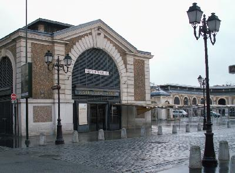
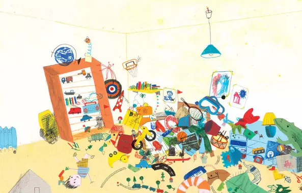
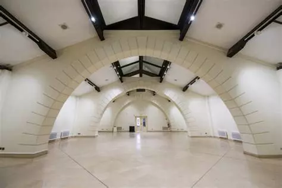

Le CARRE A LA FARINE Aujourdh’ui

Place du CARRRE A LA FARINE
Aujourd’hui Le CARRE A LA FARINE tient lieu de salle
d’exposition pour lequel j’y rencontre de nombreux artistes avec
qui j’entretiens de très bonnes relations.
Avec Corinne, nous partageons notre mission d’accueil et de
gardiennage en ce lieu historique.
Notre responsable, Delphine, vient nous voir de temps en temps
pour nous expliquer le travail à effectuer avec les exposants.
Avant que le CARRE A LA FARINE ne devienne salle d’exposition, il
tenait de lieu à l’équipe de la police municipale. C’est pour
cette raison que le personnel destiné à la gestion du CARRE A LA
FARINE fait partie de ce service dont son Responsable est
Christophe. Non ce n’est pas la même personne que j’avais
rencontré aux beaux-arts. Je vous ferais part de mes commentaires un peu plus loin dans mon récit.
Le responsable nous reconvoque
en compagnie des deux agents, Christian et José en charge de nous
former sur cette mission. Christian et José me montrent la salle
d’exposition ainsi que la réserve qui se trouve au fond de la
salle et dans laquelle on entre par 2 portes.

Salle d'exposition
‘’ Oh là là, quel bazard ‘’ Nous pouvons à peine entrer
tellement il s’est accumulés d’objets en tout genre. Nous
atteignons la petite cuisine. Son état n’est pas à envier à la
réserve.
Dans les premiers temps, José et Christian nous montre comment
s’organise une semaine d’exposition.
- Montage le lundi
-
Vernissage des exposants ( un soir dans la semaine d’exposition)
- Démontage du dimanche
Après quelques mois de prise en main du CARRE, le 8 Octobre, Mme
M. RH super gentille vient me voir afin de passer un entretien
destiné à prendre le poste de gardienne du CARRE A LA FARINE et
d’en devenir la titulaire.
Nous sommes quatre candidats pour ce poste. L’entretien se déroule
en compagnie du directeur de la police municipale, le responsable
RH et Mr A.
On me pose de nombreuses questions pendant une heure.
Je retourne ensuite prendre mon poste au CARRE A LA FARINE. Ce
même jour l'un des candidats au poste vient me voir et me dit:’’ Je ne me vois pas travailler dans cet endroit’’
Il me montre une poutre au milieu de la salle et me dit :’’Il n’y
a plus qu’à mettre une corde’’.

Salle d'exposition
C’est vrai que ce lieu manque de lumière du jour, aucune fenêtre
pour apprécier la foule de la place du marché. La lumière
artificielle y brille toute la journée.
Place du CARRRE A LA FARINE
Aujourd’hui Le CARRE A LA FARINE tient lieu de salle
d’exposition pour lequel j’y rencontre de nombreux artistes avec
qui j’entretiens de très bonnes relations.
Avec Corinne, nous partageons notre mission d’accueil et de
gardiennage en ce lieu historique.
Notre responsable, Delphine, vient nous voir de temps en temps
pour nous expliquer le travail à effectuer avec les exposants.
Avant que le CARRE A LA FARINE ne devienne salle d’exposition, il
tenait de lieu à l’équipe de la police municipale. C’est pour
cette raison que le personnel destiné à la gestion du CARRE A LA
FARINE fait partie de ce service dont son Responsable est
Christophe. Non ce n’est pas la même personne que j’avais
rencontré aux beaux-arts. Je vous ferais part de mes commentaires un peu plus loin dans mon récit.
Le responsable nous reconvoque en compagnie des deux agents, Christian et José en charge de nous former sur cette mission. Christian et José me montrent la salle d’exposition ainsi que la réserve qui se trouve au fond de la salle et dans laquelle on entre par 2 portes.
Salle d'exposition
‘’ Oh là là, quel bazard ‘’ Nous pouvons à peine entrer tellement il s’est accumulés d’objets en tout genre. Nous atteignons la petite cuisine. Son état n’est pas à envier à la réserve.
Dans les premiers temps, José et Christian nous montre comment s’organise une semaine d’exposition.
- Montage le lundi
- Vernissage des exposants ( un soir dans la semaine d’exposition)
- Démontage du dimanche
Après quelques mois de prise en main du CARRE, le 8 Octobre, Mme
M. RH super gentille vient me voir afin de passer un entretien
destiné à prendre le poste de gardienne du CARRE A LA FARINE et
d’en devenir la titulaire.
Nous sommes quatre candidats pour ce poste. L’entretien se déroule
en compagnie du directeur de la police municipale, le responsable
RH et Mr A.
On me pose de nombreuses questions pendant une heure.
Je retourne ensuite prendre mon poste au CARRE A LA FARINE. Ce
même jour l'un des candidats au poste vient me voir et me dit:’’ Je ne me vois pas travailler dans cet endroit’’
Il me montre une poutre au milieu de la salle et me dit :’’Il n’y
a plus qu’à mettre une corde’’.
Salle d'exposition
C’est vrai que ce lieu manque de lumière du jour, aucune fenêtre pour apprécier la foule de la place du marché. La lumière artificielle y brille toute la journée.